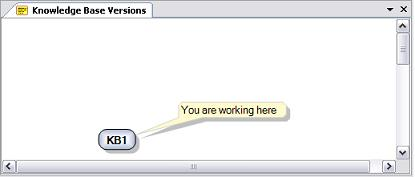
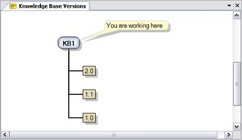
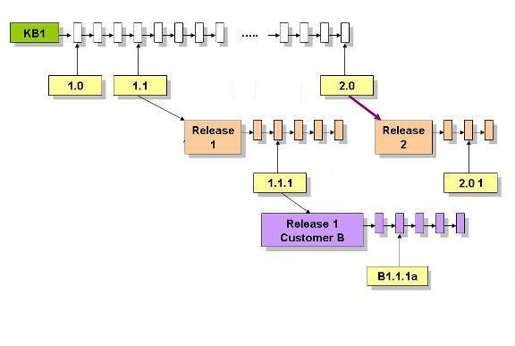
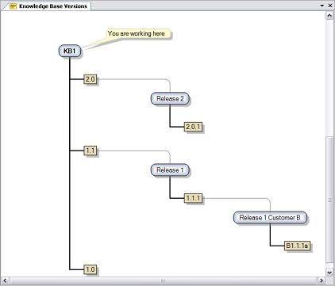

The Knowledge Base Versions Tool Window shows a tree representation of an application's life. The order of the tree is chronological, with the most recent nodes appearing closer to the top. The root node, known as the main Development Version, represents the application's major evolution path. Other nodes may be either a Frozen Version, representing special milestones in the application's life, or a Development Version, representing other evolution paths. At the begining, we start with only one node, which has the same name as the Knowledge Base. We don't have to do anything to get this node, as it is created when we create the KB. This node is the root node of the trunk:  Fig2.- First node of the version treeAs we start working in our application, we will need to add milestones (frozen versions). This is done by right-clicking on the root's trunk node, and selecting "Freeze" from the pop-up window. So we have the frozen version labels:  Fig3.- Adding a frozen version lo label the KB variations in the version treeTo add a new development version we need to right-click on a Frozen Version and select "New Version" from the pop-up window. In the images below we can see a diagram structure of the development cycle in a particular application, and how the Knowledge Base Tool Window should look in order to store it.  Fig5. - Example shown in Knowledge Base Versions
|
| Backlinks | |
| Automatic Backup property | Identifying the Active Development Version |
| Setting a Development Version as Active | What is a Development Version? |
| What is a Frozen Version? |